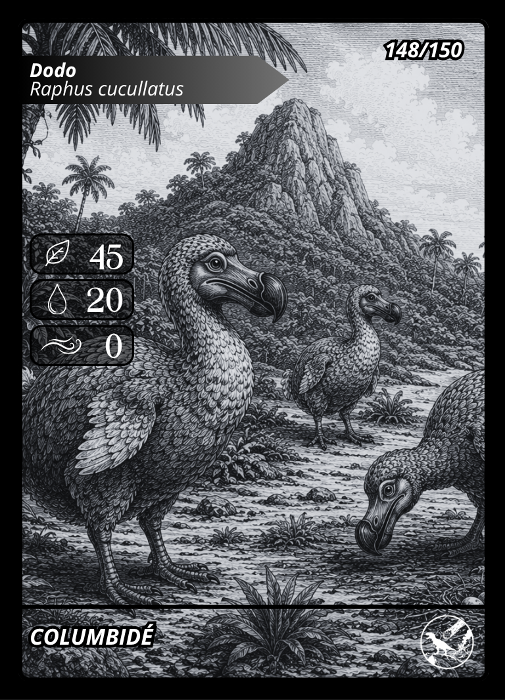
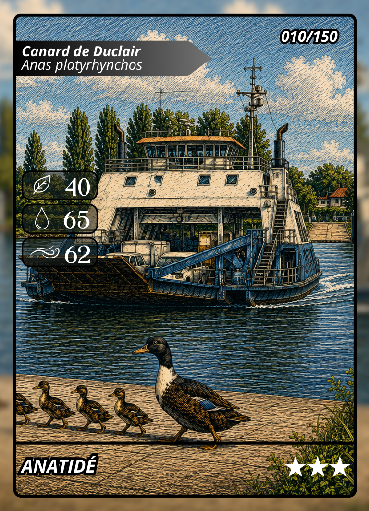
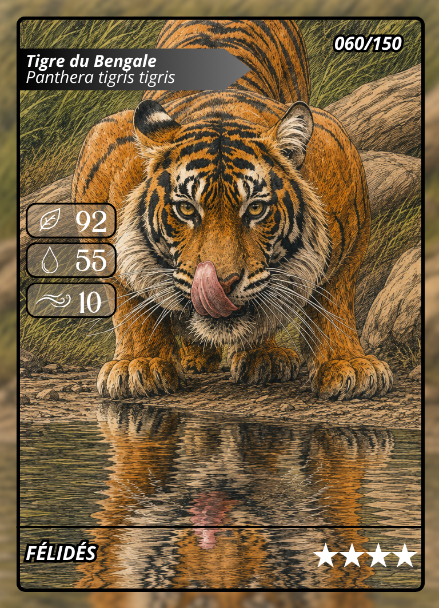
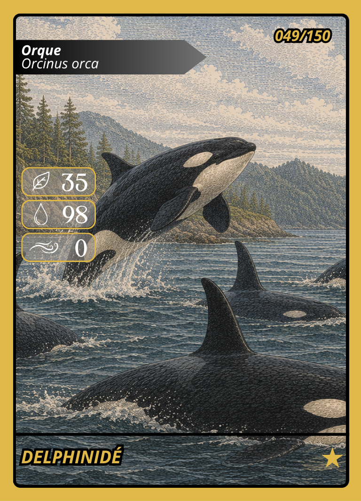

Une histoire
Une passion commune devenue un projet de création.
Notre histoire
Frændir, c’est plus qu’un nom. C’est un lien, une histoire commune et l’envie de donner vie à des univers que l’on partage.
Née en Normandie et portée par deux cousins, notre maison imagine des projets accessibles, sincères et capables de réunir les générations autour d’une même aventure.
« Des racines pour point de départ.
De nouveaux horizons pour destination. »
Une passion commune devenue un projet de création.
Une identité forte, entre nature, mémoire et imagination.
Des jeux et des univers pensés pour durer et évoluer.
Deux regards réunis par la même envie de créer.
Premier univers
Un jeu de cartes de combat et de collection où chaque animal révèle ses forces sur trois terrains : Terre, Eau et Air. Un univers à découvrir dans le jeu physique et son application mobile.




Nous contacter
Une question sur Frændir ou sur l’univers Animoria ?
contact@fraendir.fr